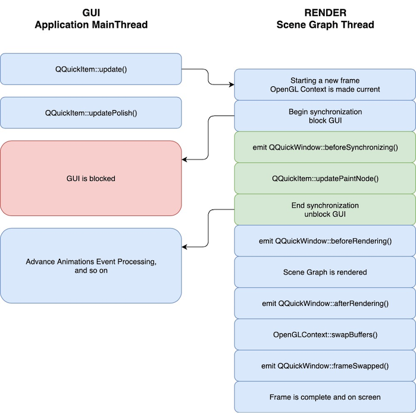
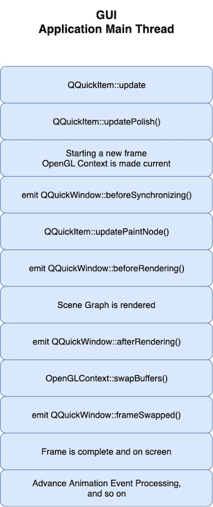

Qt Quick Scene Graph
The Scene Graph in Qt Quick
Qt Quick 2 makes use of a dedicated scene graph that is then traversed and rendered via a graphics API such as OpenGL ES, OpenGL, Vulkan, Metal, or Direct 3D. Using a scene graph for graphics rather than the traditional imperative painting systems (QPainter and similar), means the scene to be rendered can be retained between frames and the complete set of primitives to render is known before rendering starts. This opens up for a number of optimizations, such as batch rendering to minimize state changes and discarding obscured primitives.
For example, say a user-interface contains a list of ten items where each item has a background color, an icon and a text. Using the traditional drawing techniques, this would result in 30 draw calls and a similar amount of state changes. A scene graph, on the other hand, could reorganize the primitives to render such that all backgrounds are drawn in one call, then all icons, then all the text, reducing the total amount of draw calls to only 3. Batching and state change reduction like this can greatly improve performance on some hardware.
The scene graph is closely tied to Qt Quick 2.0 and can not be used stand-alone. The scene graph is managed and rendered by the QQuickWindow class and custom Item types can add their graphical primitives into the scene graph through a call to QQuickItem::updatePaintNode().
The scene graph is a graphical representation of the Item scene, an independent structure that contains enough information to render all the items. Once it has been set up, it can be manipulated and rendered independently of the state of the items. On many platforms, the scene graph will even be rendered on a dedicated render thread while the GUI thread is preparing the next frame's state.
Note: Much of the information listed on this page is specific to the built-in, default behavior of the Qt Quick Scene graph. When using an alternative scene graph adaptation, such as, the software adaptation, not all concepts may apply. For more information about the different scene graph adaptations see Scene Graph Adaptations.
Qt Quick Scene Graph Structure
The scene graph is composed of a number of predefined node types, each serving a dedicated purpose. Although we refer to it as a scene graph, a more precise definition is node tree. The tree is built from QQuickItem types in the QML scene and internally the scene is then processed by a renderer which draws the scene. The nodes themselves do not contain any active drawing code nor virtual paint() function.
Even though the node tree is mostly built internally by the existing Qt Quick QML types, it is possible for users to also add complete subtrees with their own content, including subtrees that represent 3D models.
Nodes
The most important node for users is the QSGGeometryNode. It is used to define custom graphics by defining its geometry and material. The geometry is defined using QSGGeometry and describes the shape or mesh of the graphical primitive. It can be a line, a rectangle, a polygon, many disconnected rectangles, or complex 3D mesh. The material defines how the pixels in this shape are filled.
A node can have any number of children and geometry nodes will be rendered so they appear in child-order with parents behind their children.
Note: This does not say anything about the actual rendering order in the renderer. Only the visual output is guaranteed.
The available nodes are:
Implements the clipping functionality in the scene graph | |
Used for all rendered content in the scene graph | |
The base class for all nodes in the scene graph | |
Used to change opacity of nodes | |
Implements transformations in the scene graph |
Custom nodes are added to the scene graph by subclassing QQuickItem::updatePaintNode() and setting the QQuickItem::ItemHasContents flag.
Warning: It is crucial that native graphics (OpenGL, Vulkan, Metal, etc.) operations and interaction with the scene graph happens exclusively on the render thread, primarily during the updatePaintNode() call. The rule of thumb is to only use classes with the "QSG" prefix inside the QQuickItem::updatePaintNode() function.
For more details, see the Scene Graph - Custom Geometry.
Preprocessing
Nodes have a virtual QSGNode::preprocess() function, which will be called before the scene graph is rendered. Node subclasses can set the flag QSGNode::UsePreprocess and override the QSGNode::preprocess() function to do final preparation of their node. For example, dividing a bezier curve into the correct level of detail for the current scale factor or updating a section of a texture.
Node Ownership
Ownership of the nodes is either done explicitly by the creator or by the scene graph by setting the flag QSGNode::OwnedByParent. Assigning ownership to the scene graph is often preferable as it simplifies cleanup when the scene graph lives outside the GUI thread.
Materials
The material describes how the interior of a geometry in a QSGGeometryNode is filled. It encapsulates graphics shaders for the vertex and fragment stages of the graphics pipeline and provides ample flexibility in what can be achieved, though most of the Qt Quick items themselves only use very basic materials, such as solid color and texture fills.
For users who just want to apply custom shading to a QML Item type, it is possible to do this directly in QML using the ShaderEffect type.
Below is a complete list of material classes:
Convenient way of rendering solid colored geometry in the scene graph | |
Encapsulates rendering state for a shader program | |
Represents a graphics API independent shader program | |
Used as a unique type token in combination with QSGMaterial | |
Convenient way of rendering textured geometry in the scene graph | |
Convenient way of rendering textured geometry in the scene graph | |
Convenient way of rendering per-vertex colored geometry in the scene graph |
Convenience Nodes
The scene graph API is low-level and focuses on performance rather than convenience. Writing custom geometries and materials from scratch, even the most basic ones, requires a non-trivial amount of code. For this reason, the API includes a few convenience classes to make the most common custom nodes readily available.
- QSGSimpleRectNode - a QSGGeometryNode subclass which defines a rectangular geometry with a solid color material.
- QSGSimpleTextureNode - a QSGGeometryNode subclass which defines a rectangular geometry with a texture material.
Scene Graph and Rendering
The rendering of the scene graph happens internally in the QQuickWindow class, and there is no public API to access it. There are, however, a few places in the rendering pipeline where the user can attach application code. This can be used to add custom scene graph content or to insert arbitrary rendering commands by directly calling the graphics API (OpenGL, Vulkan, Metal, etc.) that is in use by the scene graph. The integration points are defined by the render loop.
For detailed description of how the scene graph renderer works, see Qt Quick Scene Graph Default Renderer.
There are two render loop variants available: basic, and threaded. basic is single-threaded, while threaded performs scene graph rendering on a dedicated thread. Qt attempts to choose a suitable loop based on the platform and possibly the graphics drivers in use. When this is not satisfactory, or for testing purposes, the environment variable QSG_RENDER_LOOP can be used to force the usage of a given loop. To verify which render loop is in use, enable the qt.scenegraph.general logging category.
Threaded Render Loop ('threaded')
On many configurations, the scene graph rendering will happen on a dedicated render thread. This is done to increase parallelism of multi-core processors and make better use of stall times such as waiting for a blocking swap buffer call. This offers significant performance improvements, but imposes certain restrictions on where and when interaction with the scene graph can happen.
The following is a simple outline of how a frame gets rendered with the threaded render loop and OpenGL. The steps are the same with other graphics APIs as well, apart from the OpenGL context specifics.

- A change occurs in the QML scene, causing
QQuickItem::update()to be called. This can be the result of for instance an animation or user input. An event is posted to the render thread to initiate a new frame. - The render thread prepares to draw a new frame and initiates a block on the GUI thread.
- While the render thread is preparing the new frame, the GUI thread calls QQuickItem::updatePolish() to do final touch-up of items before they are rendered.
- GUI thread is blocked.
- The QQuickWindow::beforeSynchronizing() signal is emitted. Applications can make direct connections (using Qt::DirectConnection) to this signal to do any preparation required before calls to QQuickItem::updatePaintNode().
- Synchronization of the QML state into the scene graph. This is done by calling the QQuickItem::updatePaintNode() function on all items that have changed since the previous frame. This is the only time the QML items and the nodes in the scene graph interact.
- GUI thread block is released.
- The scene graph is rendered:
- The QQuickWindow::beforeRendering() signal is emitted. Applications can make direct connections (using Qt::DirectConnection) to this signal to use custom graphics API calls which will then stack visually beneath the QML scene.
- Items that have specified QSGNode::UsePreprocess, will have their QSGNode::preprocess() function invoked.
- The renderer processes the nodes.
- The renderer generates states and records draw calls for the graphics API in use.
- The QQuickWindow::afterRendering() signal is emitted. Applications can make direct connections (using Qt::DirectConnection) to this signal to issue custom graphics API calls which will then stack visually over the QML scene.
- The frame is now ready. The buffers are swapped (OpenGL), or a present command is recorded and the command buffers are submitted to a graphics queue (Vulkan, Metal). QQuickWindow::frameSwapped() is emitted.
- While the render thread is rendering, the GUI is free to advance animations, process events, etc.
The threaded renderer is currently used by default on Windows with Direct3D 11 and with OpenGL when using opengl32.dll, Linux excluding Mesa llvmpipe, macOS with Metal, mobile platforms, and Embedded Linux with EGLFS, and with Vulkan regardless of the platform. All this may change in future releases. It is always possible to force use of the threaded renderer by setting QSG_RENDER_LOOP=threaded in the environment.
Non-threaded Render Loop ('basic')
The non-threaded render loop is currently used by default on Windows with OpenGL when not using the system's standard opengl32.dll, macOS with OpenGL, and Linux with some drivers. For the latter this is mostly a precautionary measure, as not all combinations of OpenGL drivers and windowing systems have been tested.
On macOS and OpenGL, the threaded render loop is not supported when building with XCode 10 (10.14 SDK) or later, since this opts in to layer-backed views on macOS 10.14. You can build with Xcode 9 (10.13 SDK) to opt out of layer-backing, in which case the threaded render loop is available and used by default. There is no such restriction with Metal.
Even when using the non-threaded render loop, you should write your code as if you are using the threaded renderer, as failing to do so will make the code non-portable.
The following is a simplified illustration of the frame rendering sequence in the non-threaded renderer.

Driving Animations
What does Advance Animations refer to in the above diagrams?
By default, a Qt Quick animation (such, as a NumberAnimation) is driven by the default animation driver. This relies on basic system timers, such as QObject::startTimer(). The timer typically runs with an interval of 16 milliseconds. While this will never be fully accurate and also depends on the accuracy of timers in the underlying platform, it has the benefit of being independent of the rendering. It provides uniform results regardless of the display refresh rate and if synchronization to the display's vertical sync is active or not. This is how animations work with the basic render loop.
In order to provide more accurate results with less stutter on-screen, independent of the render loop design (be it single threaded or multiple threads) a render loop may decide to install its own custom animation driver, and take the operation of advancing it into its own hands, without relying on timers.
This is what the threaded render loop implements. In fact, it installs not one, but two animation drivers: one on the gui thread (to drive regular animations, such as NumberAnimation), and one on the render thread (to drive render thread animations, i.e. the Animator types, such as OpacityAnimator or XAnimator). Both of these are advanced during the preparation of a frame, i.e. animations are now synchronized with rendering. This makes sense due to presentation being throttled to the display's vertical sync by the underlying graphics stack.
Therefore, in the diagram for the threaded render loop above, there is an explicit Advance animations step on both threads. For the render thread, this is trivial: as the thread is being throttled to vsync, advancing animations (for Animator types) in each frame as if 16.67 milliseconds had elapsed gives more accurate results than relying on a system timer. (when throttled to the vsync timing, which is 1000/60 milliseconds with a 60 Hz refresh rate, it is fair to assume that it has been approximately that long since the same operation was done for the previous frame)
The same approach works for animations on the gui (main) thread too: due to the essential synchronization of data between the gui and render threads, the gui thread is effectively throttled to the same rate as the render thread, while still having the benefit of having less work to do, leaving more headroom for the application logic since much of the rendering preparations are now offloaded to the render thread.
While the above examples used 60 frames per second, Qt Quick is prepared for other refresh rates as well: the rate is queried from the QScreen and the platform. For example, with a 144 Hz screen the interval is 6.94 ms. At the same time this is exactly what can cause trouble if vsync-based throttling is not functioning as expected, because if what the render loop thinks is happening is not matching reality, incorrect animation pacing will occur.
Note: Starting from Qt 6.5, the threaded render loop offers the possibility of opting in to another animation driver, based solely on the elapsed time (QElapsedTimer). To enable this, set the QSG_USE_SIMPLE_ANIMATION_DRIVER environment variable to a non-zero value. This has the benefits of not needing any of the infrastructure for falling back to a QTimer when there are multiple windows, not needing heuristics trying determine if vsync-based throttling is missing or broken, being compatible with any kind of temporal drifts in vsync throttling, and not being tied to the primary screen's refresh rate, thus potentially working better in multi-screen setups. It also drives render thread animations (the Animator types) correctly even if vsync-based throttling is broken or disabled. On the other hand, animations may be perceived as less smooth with this approach. With compatibility in mind, it is offered as an opt-in feature at the moment.
In summary, the threaded render loop is expected to provide smoother animations with less stutter as long as the following conditions are met:
- There is exactly one window (as in QQuickWindow) on-screen.
- VSync-based throttling works as expected with the underyling graphics and display stack.
What if there is no or more than one window visible?
When there is no renderable window, for example because our QQuickWindow is minimized (Windows) or fully obscured (macOS), we cannot present frames, thus cannot rely on the thread "working" in lockstep with the screen refresh rate. In this case, the threaded render loop automatically switches over to a system timer based approach to drive animations, i.e. temporarily switching over to the mechanism the basic loop would use.
The same is true when there are more than one QQuickWindow instances on-screen. The model presented above for advancing animations on the gui thread, enabled by its synchronization with the render thread, is not satisfactory anymore, as there are now multiple sync points with multiple render threads. (one per window.) Here falling back to the system timer based approach becomes necessary as well, because how long and often the gui thread will block is now dependent on a number of factors, including the content in the windows (are they animating? how often are they updating?) and the graphics stack behavior (how exactly does it handle two or more threads presenting with wait-for-vsync?). As we cannot guarantee being throttled to the presentation rate of the window (which window would that be, to begin with?) in a stable, cross-platform manner, advancing animations cannot be based on the rendering.
This switch of animation handling mechanisms is transparent to the applications.
What if vsync-based throttling is disfunctional, globally disabled, or the application disabled it itself?
The threaded render loop relies on the graphics API implementation and/or the windowing system for throttling, for example, by requesting a swap interval of 1 in case of OpenGL (GLX, EGL, WGL), calling Present() with an interval of 1 for Direct 3D, or using the presentation mode FIFO with Vulkan.
Some graphics drivers allow users to override this setting and turn it off, ignoring Qt's request. An example of this would be a system wide control panel of the graphics driver that allows overriding the application's settings with regards to vsync. It can also happen that a graphics stack is unable to provide proper vsync-based throttling, which can be the case in some virtual machines (mainly due to using a software rasterization based implementation of OpenGL or Vulkan).
Without blocking in the swap/present operation (or some other graphics operation), such a render loop would advance animations too fast. This would be no issue with the basic render loop, because that always relies on system timers. With threaded, the behavior can vary based on the Qt version:
- If a system is known to be unable to provide vsync-based throttling, the only option before Qt 6.4 was to use the
basicrender loop, by manually settingQSG_RENDER_LOOP=basicin the environment before running the application. - Starting with Qt 6.4, setting either the
QSG_NO_VSYNCenvironment variable to a non-zero value, or the window's QSurfaceFormat::swapInterval() to0can both alleviate the problem as well: by explicitly requesting disabling vsync-based blocking, regardless of the request having any effect in practice, thethreadedrender loop can by extension recognize that relying on vsync to drive animations is futile, and it will fall back to using system timers, just as it would for more than one window. - Even better, starting from Qt 6.4 the scenegraph also attempts to recognize using some simple heuristics that the frames are being presented "too fast", and automatically switch over to system timers if seen necessary. This means that in most cases there will be no need to do anything and applications will run animations as expected even when the default render loop is the
threadedone. While this is transparent to applications, for troubleshooting and development purposes it is useful to know that this is logged with a"Window 0x7ffc8489c3d0 is determined to have broken vsync throttling ..."message printed whenQSG_INFOorqt.scenegraph.generalis enabled. This method has the downside of activating only after a small set of frames, given that it first needs to collect data to evaluate, meaning that when opening a QQuickWindow the application may still show overly fast animations for a short period of time. Additionally, it may not capture all possible vsync-broken situations.
Remember however, that by design none of this helps render thread animations (the Animator types). In the absence of vsync-based blocking, animators will advance incorrectly by default, faster than expected, even when the workarounds are activated for regular animations. If this becomes an issue, consider using the alternative animation driver by setting QSG_USE_SIMPLE_ANIMATION_DRIVER.
Note: Be aware that the rendering loop logic and event processing on the GUI (main) thread is not necessarily unthrottled even if waiting for vsync is disabled: both render loops schedule updates for windows via QWindow::requestUpdate(). This is backed by a 5 ms GUI thread timer on most platforms, in order to give time for event processing. On some platforms, e.g. macOS, it is using platform-specific APIs (such as, CVDisplayLink) to get notified about the appropriate time to prepare a new frame, likely tied to the display's vsync in some form. This can be relevant in benchmarking and similar situations. For applications and tools attempting to perform low-level benchmarking it may be beneficial to set the QT_QPA_UPDATE_IDLE_TIME environment variable to 0 in order to potentially reduce idle time on the GUI thread. For normal application usage the defaults should, in most cases, be sufficient.
Note: When in doubt, enable the qt.scenegraph.general and qt.scenegraph.time.renderloop logging categories for troubleshooting, as these may reveal some clues as to why rendering and animations are not running at the expected pace.
Custom control over rendering with QQuickRenderControl
When using QQuickRenderControl, the responsibility for driving the rendering loop is transferred to the application. In this case no built-in render loop is used. Instead, it is up to the application to invoke the polish, synchronize and rendering steps at the appropriate time. It is possible to implement either a threaded or non-threaded behavior similar to the ones shown above.
Additionally, applications may wish to implement and install their own QAnimationDriver in combination with QQuickRenderControl. This gives full control over driving Qt Quick animations, which can be particularly important for content that is not shown on screen, bearing no relation to the presentation rate simply because there is no presenting of the frame happening. This is optional, by default animations will advance based on the system timer.
Extending the Scene Graph with QRhi-based and native 3D rendering
The scene graph offers three methods for integrating application-provided graphics commands:
- Issuing either QRhi-based or OpenGL, Vulkan, Metal, Direct3D commands directly before or after the scene graph's own rendering. This in effect prepends or appends a set of draw calls into the main render pass. No additional render target is used.
- Rendering to a texture and creating a textured node in the scene graph. This involves an additional render pass and render target.
- Issuing draw calls inline with the scene graph's own rendering by instantiating a QSGRenderNode subclass in the scene graph. This is similar to the first approach but the custom draw calls are effectively injected into the scene graph's command stream.
Underlay/overlay mode
By connecting to the QQuickWindow::beforeRendering() and QQuickWindow::afterRendering() signals, applications can make QRhi or native 3D API calls directly into the same context as the scene graph is rendering to. With APIs like Vulkan or Metal, applications can query native objects, such as, the scene graph's command buffer, via QSGRendererInterface, and record commands to it as they see fit. As the signal names indicate, the user can then render content either under a Qt Quick scene or over it. The benefit of integrating in this manner is that no extra render targets are needed to perform the rendering, and a possibly expensive texturing step is eliminated. The downside is that the custom rendering can only be issued either at the beginning or at the end of Qt Quick's own rendering. Using QSGRenderNode instead of the QQuickWindow signals can lift that restriction somewhat, but in either case care must be taken when it comes to 3D content and depth buffer usage since relying on depth testing and rendering with depth write enabled can easily create situations where the custom content and the Qt Quick content's depth buffer usage conflict with each other.
From Qt 6.6 the QRhi APIs are considered semi-public, i.e. offered to the applications and documented, albeit with a limited compatibility guarantee. This allows creating portable, cross-platform 2D/3D rendering code by using the same graphics and shader abstractions the scene graph itself uses.
The Scene Graph - RHI Under QML example gives an example on how to implement the underlay/overlay approach using QRhi.
The Scene Graph - OpenGL Under QML example gives an example on how to use these signals using OpenGL.
The Scene Graph - Direct3D 11 Under QML example gives an example on how to use these signals using Direct3D.
The Scene Graph - Metal Under QML example gives an example on how to use these signals using Metal.
The Scene Graph - Vulkan Under QML example gives an example on how to use these signals using Vulkan.
Starting with Qt 6.0, direct usage of the underlying graphics API must be enclosed by a call to QQuickWindow::beginExternalCommands() and QQuickWindow::endExternalCommands(). This concept may be familiar from QPainter::beginNativePainting(), and serves a similar purpose: it allows the Qt Quick Scene Graph to recognize that any cached state and assumptions about the state within the currently recorded render pass, if there is one, are now invalid, because the application code may have altered it by working directly with the underlying graphics API. This is not applicable and necessary when using QRhi.
When mixing custom OpenGL rendering with the scene graph, it is important the application does not leave the OpenGL context in a state with buffers bound, attributes enabled, special values in the z-buffer or stencil-buffer or similar. Doing so can result in unpredictable behavior.
The custom rendering code must be thread aware in the sense that it should not assume being executed on the GUI (main) thread of the application. When connecting to the QQuickWindow signals, the application should use Qt::DirectConnection and understand that the connected slots are invoked on the scene graph's dedicated render thread, if there is one.
The texture-based approach
The texture-based alternative is the most flexible approach when the application needs to have a "flattened", 2D image of some custom 3D rendering within the Qt Quick scene. This also allows using a dedicated depth/stencil buffer that is independent of the buffers used by the main render pass.
When using OpenGL, the legacy convenience class QQuickFramebufferObject can be used to achieve this. QRhi-based custom renderers and graphics APIs other than OpenGL can also follow this approach, even though QQuickFramebufferObject does not currently support them. Creating and rendering to a texture directly with the underlying API, followed by wrapping and using this resource in a Qt Quick scene in a custom QQuickItem, is demonstrated in the following examples:
Scene Graph - RHI Texture Item example.
Scene Graph - Vulkan Texture Import example.
Scene Graph - Metal Texture Import example.
The inline approach
Using QSGRenderNode the custom draw calls are injected not at the beginning or the end of the recording of the scene graph's render pass, but rather during the scene graph's rendering process. This is achieved by creating a custom QQuickItem based by an instance of QSGRenderNode, a scene graph node that exists specifically to allow issuing graphics commands either via QRhi or a native 3D API such as OpenGL, Vulkan, Metal, or Direct 3D.
The Scene Graph - Custom QSGRenderNode example gives a demonstration of this approach.
Custom Items using QPainter
The QQuickItem provides a subclass, QQuickPaintedItem, which allows the users to render content using QPainter.
Warning: Using QQuickPaintedItem uses an indirect 2D surface to render its content, either using software rasterization or using an OpenGL framebuffer object (FBO), so the rendering is a two-step operation. First rasterize the surface, then draw the surface. Using scene graph API directly is always significantly faster.
Logging Support
The scene graph has support for a number of logging categories. These can be useful in tracking down both performance issues and bugs in addition to being helpful to Qt contributors.
qt.scenegraph.time.texture- logs the time spent doing texture uploadsqt.scenegraph.time.compilation- logs the time spent doing shader compilationqt.scenegraph.time.renderer- logs the time spent in the various steps of the rendererqt.scenegraph.time.renderloop- logs the time spent in the various steps of the render loop. With thethreadedrender loop this gives an insight into the time elapsed between the various frame preparation steps both on the GUI and the render thread. It can therefore also be a useful troubleshooting tool, for example, to confirm how vsync-based throttling and other low-level Qt enablers, such as QWindow::requestUpdate(), affect the rendering and presentation pipeline.qt.scenegraph.time.glyph- logs the time spent preparing distance field glyphsqt.scenegraph.general- logs general information about various parts of the scene graph and the graphics stackqt.scenegraph.renderloop- creates a detailed log of the various stages involved in rendering. This log mode is primarily useful for developers working on Qt.
The legacy QSG_INFO environment variable is also available. Setting it to a non-zero value enables the qt.scenegraph.general category.
Note: When encountering graphics problems, or when in doubt which render loop or graphics API is in use, always start the application with at least qt.scenegraph.general and qt.rhi.* enabled, or QSG_INFO=1 set. This will then print some essential information onto the debug output during initialization.
Scene Graph Backend
In addition to the public API, the scene graph has an adaptation layer which opens up the implementation to do hardware specific adaptations. This is an undocumented, internal and private plugin API, which lets hardware adaptation teams make the most of their hardware. It includes:
- Custom textures; specifically the implementation of QQuickWindow::createTextureFromImage and the internal representation of the texture used by Image and BorderImage types.
- Custom renderer; the adaptation layer lets the plugin decide how the scene graph is traversed and rendered, making it possible to optimize the rendering algorithm for a specific hardware or to make use of extensions which improve performance.
- Custom scene graph implementation of many of the default QML types, including its text and font rendering.
- Custom animation driver; allows the animation system to hook into the low-level display vertical refresh to get smooth rendering.
- Custom render loop; allows better control over how QML deals with multiple windows.